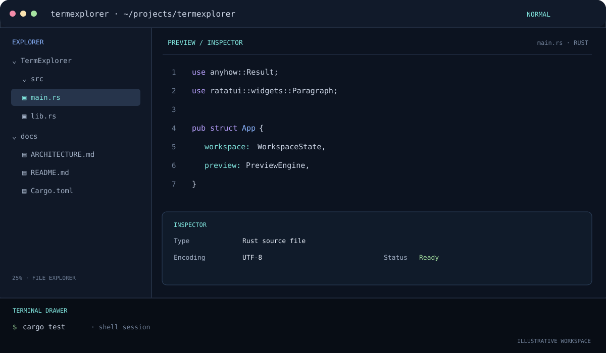

Explore without losing context
Navigate directories, inspect metadata and move through project files from a compact explorer.
Explore file navigation →TermExplorer brings your files, code, previews and terminal workflow into one keyboard-first workspace. Spend less time switching tools and more time understanding what you're working on.

TermExplorer is designed around inspection rather than a stack of permanent panels. Navigation stays compact while the Preview/Inspector gives your current selection the space it needs.
Navigate directories, inspect metadata and move through project files from a compact explorer.
Explore file navigation →Preview supported text, structured data, images, archives and media metadata from the same workspace.
Explore the preview engine →Edit files, search a workspace, inspect Git state and open a PTY terminal without leaving the application.
Explore workflows →The default workspace gives the File Explorer a focused 25% and the Preview/Inspector the remaining 75%. The terminal drawer stays out of the way until you need it.
Explore the parts of TermExplorer that are present in the current codebase. Availability of individual previews can depend on file type and optional system tools.
Text editing, syntax highlighting, undo/redo, completion layers and LSP integration.
Find files and search project content with filtering and cancellation support.
Review repository state and work with staging and diffs from the TUI.
A plugin model with a host-controlled capability boundary and execution limits.
Review the current release candidate, installation options and supported dependencies. TermExplorer is an actively evolving Linux developer workstation.